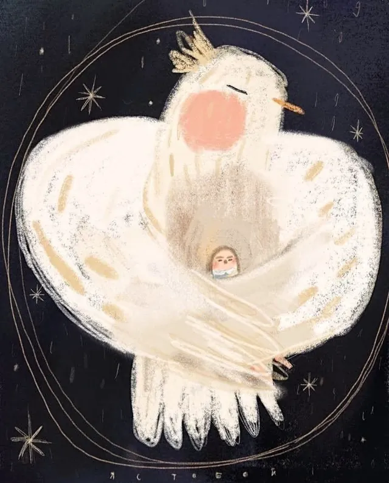
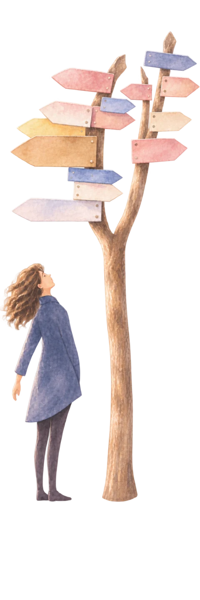

Конфиденциальность
Всё, что вы рассказываете, остаётся между нами. Исключения: угроза жизни и здоровью и случаи, предусмотренные законом.
Работаю в соответствии с этическим кодексом Московского гештальт института.

Я знаю, как непросто бывает решиться на встречу с психологом. Особенно когда и без того тяжело, сил немного, а впереди разговор с незнакомым человеком о том, что порой трудно объяснить даже самому себе.
Мне важно, чтобы рядом со мной вы могли постепенно почувствовать себя свободнее в разговоре о том, что вас беспокоит. Я буду внимательно слушать, стараться понять вас и вместе с вами разбираться в ваших переживаниях. Здесь не нужно заранее находить правильные слова, точно знать, чего вы хотите, или рассказывать больше, чем вы сейчас готовы.
Я постаралась собрать на этом сайте достаточно информации о себе, своём подходе и о том, как устроена наша работа. Вы можете спокойно познакомиться со мной, почитать статьи и материалы, прислушаться к своим ощущениям и решить, подходит ли вам то, что я предлагаю. А возможно, что-то полезное для себя вы найдёте уже здесь.

пара минут чтобы познакомиться со мной почти вживую
«Не понимаю что, но что-то не так»
Необязательно заранее знать, с чем именно вы хотите разобраться, или уметь подобрать правильные слова. Иногда достаточно чувствовать, что сейчас вам непросто и хочется, чтобы что-то изменилось
Честно говорю об этом заранее, чтобы вы не тратили время и деньги:
Я окончила бакалавриат СПбГУ по психологии с отличием. Обучалась на программах по работе с детьми и подростками и навыкам профессионально-личностного консультирования. Сейчас учусь на первой ступени Московского Гештальт Института.
Я человек, а у всех людей есть свои ограничения, и я отношусь к этому ответственно. Поэтому у меня выстроена система опор – вот как она устроена:
Наша с вами сессия
За нашей работой стоит не только мой опыт, но и опыт моих коллег и наставников.
Всё, что вы рассказываете, остаётся между нами. Исключения: угроза жизни и здоровью и случаи, предусмотренные законом.
Работаю в соответствии с этическим кодексом Московского гештальт института.
Мне важно, чтобы у нас было общее понимание целей, условий и формата нашей работы. Любые договорённости можно пересматривать в процессе терапии, обсуждая возникающие потребности и сложности.
Для меня важно открыто делиться своими наблюдениями, предположениями, возникающими относительно происходящего переживаниями. Я ценю возможность честно обсуждать то, что происходит в процессе нашей работы и в наших отношениях.
Я с искренним интересом и вниманием отношусь к вашей субъективной реальности. Возможность быть узнанным Другим, увиденным, понятым и принятым во всей своей уникальности, на мой взгляд, одна из главных ценностей терапевтического процесса.

Способствую тому, чтобы вы могли говорить о том и так, как хочется вам. Если мне кажется, что мы далеко ушли от темы запроса, могу мягко это обозначить и поинтересоваться, хотелось бы ли вам вернуться к изначальной теме. Если у меня есть какое-то предположение, открыто выношу его на обсуждение.
Обращаюсь к вашим чувствам или говорю, что чувствую относительно ваших слов.
Даю рекомендации в рамках моей компетенции: техники, упражнения, обращение к смежным специалистам.
И ваше, и свое внимание направляю на вас. Этот час для того, чтобы своими мыслями, чувствами и происшествиями могли поделиться вы. Я говорю о своих чувствах или опыте только относительно ваших слов и процесса работы, и только если вижу это полезным и уместным.
55 минут · вне зависимости от формата
1000 ₽

Можно в нескольких предложениях описать, что вас беспокоит, и задать вопросы, которые важны вам перед началом работы. Если сложно сформулировать, хватит и пары слов, даже «не понимаю, что со мной, но что-то не так». Если запрос не в моих компетенциях, я скажу об этом сразу и подскажу, к какому специалисту обратиться. Затем договариваемся о времени и формате первой встречи.
Если вам менее 18 лет, до начала работы нужно, чтобы родители подписали согласие на нее.
Говорим о том, что вас беспокоит: как давно, в каких ситуациях, как это сказывается на вашей жизни. Можно говорить в своем темпе и не отвечать на то, о чем пока не хочется. Вместе формулируем, к чему вы хотели бы прийти, и обсуждаем, что работа может дать, а что нет. После встречи вы спокойно решаете, продолжать ли. Первая встреча ни к чему не обязывает.
Подробнее о психологическом контракте
Договариваемся о том, какой вклад в работу будет внесен с вашей и с моей стороны, какие условия нам необходимо соблюсти для успешной работы.
Встречаемся регулярно и движемся к цели, которую сформулировали вместе. Цель может меняться, и это нормально. Время от времени сверяемся, что происходит и подходит ли вам работа.
Запись утверждается по стопроцентной предоплате
в Яндекс Телемосте
2700 ₽
Санкт-Петербург, Думская ул., 5/22, м. Невский проспект и Гостиный двор
3200 ₽
вне зависимости от формата
2000 ₽
вне зависимости от формата
1500 ₽
Будни, 11:00–20:00 по Москве
Сессия длится 55 минут
Если планы изменятся, я верну предоплату при отмене встречи не позже чем за 24 часа до её начала.
Онлайн-встречи проходят с включенными камерой и микрофоном у обоих, клиенту необходимо организовать себе уединенное пространство на время встречи.
Думская ул., 5/22, м. Невский проспект и Гостиный двор.
Консультации проходят по будням с 11:00 до 20:00 по московскому времени. О конкретном времени договариваемся в переписке.
В личных сообщениях можно задать вопрос об условиях или договориться о первой встрече. Если сложно сформулировать запрос, можно начать с нескольких слов.
можно начать с такого сообщения
Наши встречи как раз то место, где можно не боясь осуждения быть растерянным, молчать, плакать и быть в этом увиденным, понятым и принятым. Все перечисленное - нормальные человеческие состояния. Если вы переживаете об эффективности работы в таком случае, то с одной стороны мы можем обсудить само это переживание - с чем оно связано, с другой стороны - спешу вас успокоить, эти состояния а) редко длятся долго и б) дают огромную пользу для процесса - в них часто большая часть его сути.
Да, можно так и сказать: «Я пока не хочу об этом говорить». Мы можем перейти к другой теме и вернуться к этой, когда и если вы будете готовы. Психика так устроена, что без ощущения достаточной безопасности действительно важные вещи могут даже не достигнуть сознания, поэтому моя главная задача - создать для вас это ощущение безопасности, а этого можно достичь только при отсутствии давления.
Скажите мне об этом, даже если пока трудно объяснить почему. Упражнение можно пропустить, а моё наблюдение можно обсудить: мне важно услышать, как вы сами видите ситуацию.
Рекомендуемая частота встреч - раз в неделю, минимальная раз в 2 недели. Я придерживаюсь тезиса о том, что при выборе между более редкой психологической работой и ее отсутствием всегда лучше первое, поэтому частоту встреч мы обсуждаем вместе. Если изменится график или бюджет, можно вернуться к этому разговору и подумать, какой вариант вам подходит сейчас.
Можно сказать прямо: «Я хочу взять паузу» или «Я хочу закончить наши встречи». Если вы решили завершить работу, мы всегда проводим заключительную встречу. На ней можно обсудить какой для вас была наша работа, причины ее окончания, подвести итоги и поговорить о том, что вы хотите взять из нашей работы с собой.
Пробуем переподключиться. Если не получается, списываемся в чате и обсуждаем, как поступить, в совсем безвыходной ситуации переносим встречу. Единичные форс-мажоры у всех иногда случаются, это нормально.
При любом формате работы перед ее началом мне необходимо лично поговорить с родителем в вашем присутствии - прояснить формат работы и границы конфиденциальности, ответить на ваши вопросы о процессе работы, обменяться контактами с родителем и передать ему информированное согласие для подписи. Только после этого мы можем назначить первичную консультацию, которая уже подчиняется правилу конфиденциальности.
Существуют психотерапевтические подходы, в которых предполагается возможность связаться между встречами, мой подход к ним не относится. Мне можно писать по организационным вопросам - перенос или отмена встречи, уточнения по сеттингу или оплате. Если хочется подробнее разобрать то, что произошло между встречами, можем сделать это на сессии.
Иногда я могу предложить понаблюдать за чем-то в повседневной жизни, например заметить, в какие моменты вам трудно сказать «нет». Это предложение, и вы сами решаете, хотите ли попробовать.
Специально готовиться не нужно. Если вам так комфортнее, можно записать пару мыслей или вопросов, чтобы вспомнить их на встрече - хуже от этого точно не будет. Единственное, что правда необходимо подготовить - качественный интернет, звук и видео, а также уединенное пространство, где вы могли бы чувствовать себя свободно.